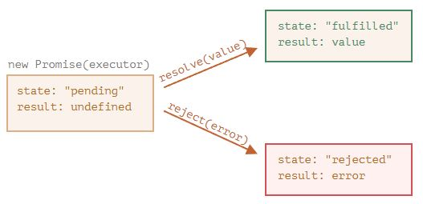
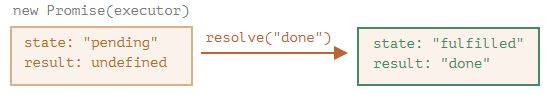
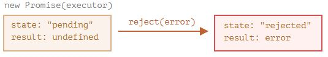

Промисы
Синтаксис создания Promise:
let promise = new Promise(function(resolve, reject) {
// функция-исполнитель (executor)
});
Функция, переданная в конструкцию new Promise, называется исполнитель (executor). Когда Promise создаётся, она запускается автоматически. Она должна содержать «создающий» код, который когда-нибудь создаст результат.
Её аргументы resolve и reject – это колбэки, которые предоставляет сам JavaScript. Наш код – только внутри исполнителя.
Когда он получает результат, сейчас или позже – не важно, он должен вызвать один из этих колбэков:
resolve(value)— если работа завершилась успешно, с результатомvalue.reject(error)— если произошла ошибка,error– объект ошибки.
Итак, исполнитель запускается автоматически, он должен выполнить работу, а затем вызвать resolve или reject.
У объекта promise, возвращаемого конструктором new Promise, есть внутренние свойства:
state(«состояние») — вначале"pending"(«ожидание»), потом меняется на"fulfilled"(«выполнено успешно») при вызовеresolveили на"rejected"(«выполнено с ошибкой») при вызовеreject.result(«результат») — вначалеundefined, далее изменяется наvalueпри вызовеresolve(value)или наerrorпри вызовеreject(error).
Так что исполнитель по итогу переводит promise в одно из двух состояний:
- 
Ниже пример конструктора Promise и простого исполнителя с кодом, дающим результат с задержкой (через setTimeout):
let promise = new Promise(function(resolve, reject) {
// эта функция выполнится автоматически, при вызове new Promise
// через 1 секунду сигнализировать, что задача выполнена с результатом "done"
setTimeout(() => resolve("done"), 1000);
});
Мы можем наблюдать две вещи, запустив код выше:
- Функция-исполнитель запускается сразу же при вызове
new Promise. - Исполнитель получает два аргумента:
resolveиreject— это функции, встроенные в JavaScript, поэтому нам не нужно их писать. Нам нужно лишь позаботиться, чтобы исполнитель вызвал одну из них по готовности.
Спустя одну секунду «обработки» исполнитель вызовет resolve("done"), чтобы передать результат:
- 
Это был пример успешно выполненной задачи, в результате мы получили «успешно выполненный» промис.
А теперь пример, в котором исполнитель сообщит, что задача выполнена с ошибкой:
let promise = new Promise(function(resolve, reject) {
// спустя одну секунду будет сообщено, что задача выполнена с ошибкой
setTimeout(() => reject(new Error("Whoops!")), 1000);
});
- 
Подведём промежуточные итоги: исполнитель выполняет задачу (что-то, что обычно требует времени), затем вызывает resolve или reject, чтобы изменить состояние соответствующего Promise.
Промис – и успешный, и отклонённый будем называть «завершённым», в отличие от изначального промиса «в ожидании».